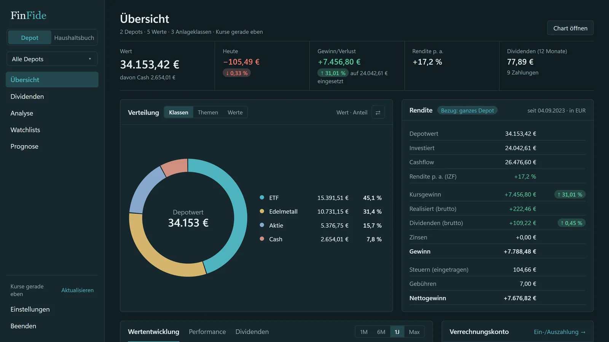
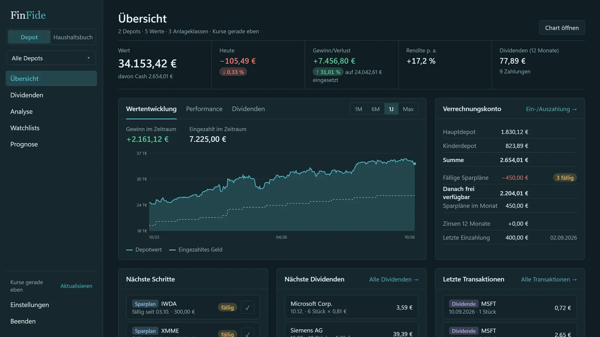
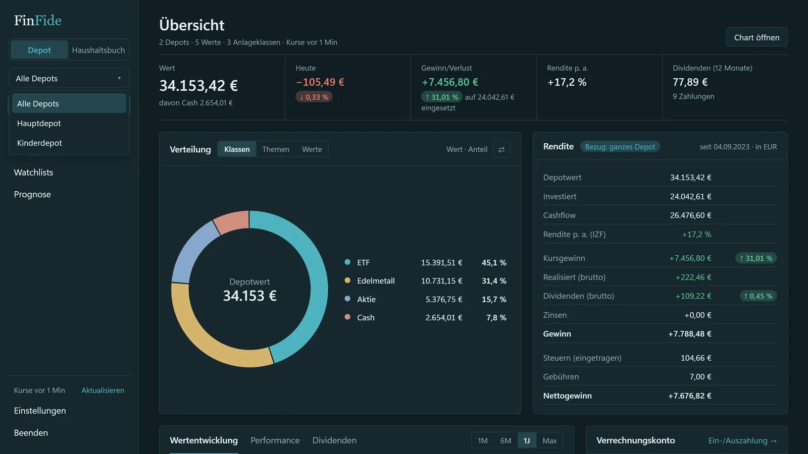
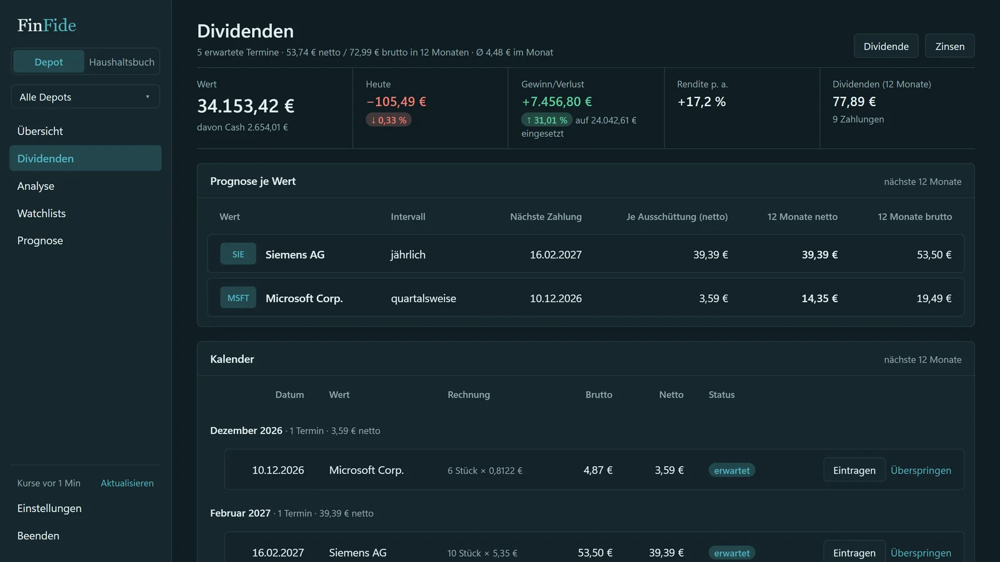
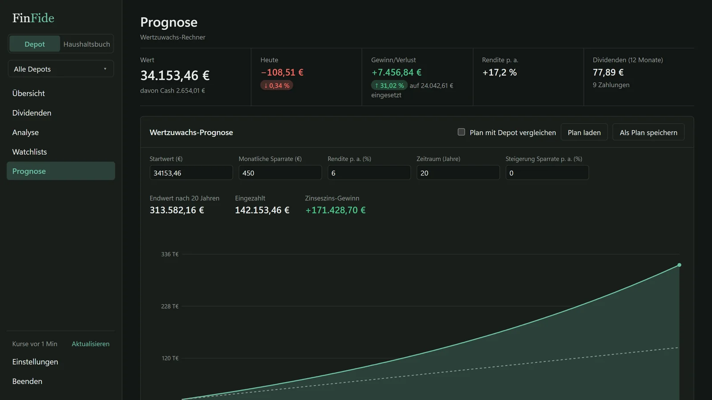
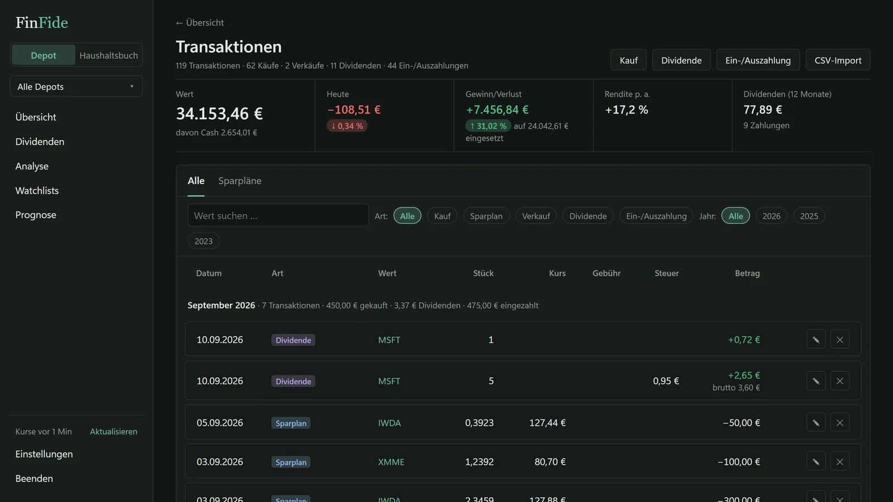
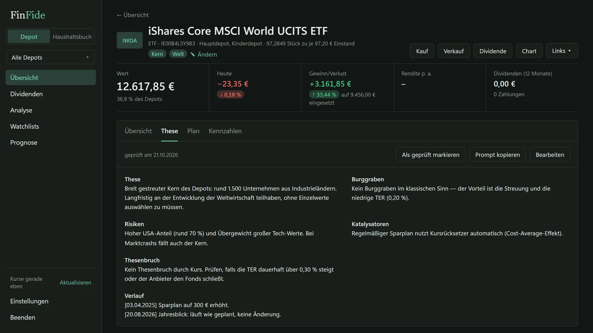
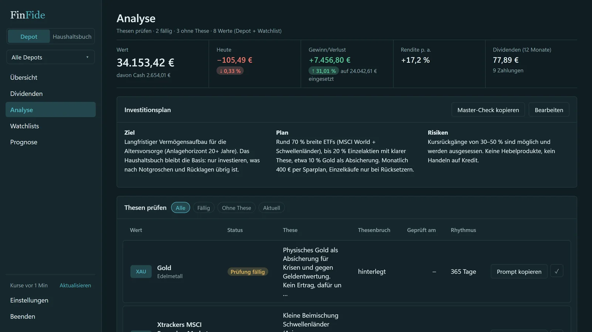

Depot-Tracker ohne Abo – mehrere Depots, lokal auf dem PC.
Aktien, ETFs, Krypto und Edelmetalle aus beliebig vielen Depots – mit Wertzuwachs, persönlicher Rendite p. a., Dividenden-Prognose und einer These je Wert. Die Zahlen stammen aus den eigenen Buchungen.

- Was
- Depot-Tracker mit mehreren Depots
- Anlageklassen
- Aktien, ETFs, Krypto, Edelmetalle
- Erfassung
- von Hand oder per CSV-Import
- Daten
- lokal, keine Cloud, keine Anmeldung
Alle Depots, ehrliche Zahlen
Neobroker, Direktbank, Krypto-Börse – einzeln oder zusammen ansehen.
- Mehrere DepotsBeliebig viele, einzeln oder zusammen ansehen.
- Aktien, ETFs, Krypto, EdelmetalleAktuelle Kurse, Aufteilung nach Position, Klasse oder eigenem Thema.
- Wertzuwachs mit persönlicher Rendite p. a.Aus Buchungen und Kursverlauf zurückgerechnet – Einzahlungen werden berücksichtigt.
- Sparpläne und VerrechnungskontoFällige Raten gesammelt bestätigen.
- CSV-Import und Excel-ExportBroker-Exporte einlesen; Jahresübersicht mit Verkäufen und Dividenden als Excel-Mappe.
Manuell erfasste Beträge aus den Brokerabrechnungen – FinFide berechnet keine Steuern und übernimmt keine Haftung für die Eingaben.


Dividenden mit Prognose und Kennzahlen
Was kommt, wann es kommt und wie sich die Ausschüttungen entwickeln.
- Dividenden-Prognose und KalenderErwartete Ausschüttungen je Position.
- Kennzahlen je PositionDividendenrendite und weitere Kennzahlen aus den eigenen Daten.
- Kauf, Verkauf, Dividende erfassenBeträge werden so eingetragen, wie sie in der Brokerabrechnung stehen.
Manuell erfasste Beträge aus den Brokerabrechnungen – FinFide berechnet keine Steuern und übernimmt keine Haftung für die Eingaben.

Vermögensentwicklung durchrechnen
Ein Rechner für den eigenen Sparplan: Startbetrag, Sparrate, angenommene Rendite und Zeitraum.
- Wertzuwachs-PrognoseEndwert, Eingezahltes und angenommener Zuwachs auf einen Blick.
- Mit dem Depot vergleichenDas Depot als Startwert laden und den eigenen Plan danebenlegen.
- Plan speichernAnnahmen bleiben gespeichert; es sind Rechenbeispiele, keine Vorhersagen.


Das Warum festhalten
Nicht nur Zahlen, auch die Begründung: je Wert eine These mit Kaufgrund, Gegenargumenten und Ausstiegsbedingung.
- These je WertWarum gekauft, was dagegen spricht, wann die These bricht – schriftlich festgehalten.
- Erinnerung zur PrüfungEin verblassender Haken zeigt, wann die nächste Prüfung ansteht.
- Thesen-CheckErstellt den fertigen Text für eine KI der eigenen Wahl – ohne Euro-Beträge.


Häufige Fragen zum Depot-Tracker.
Wie viele Depots, Watchlists und Charts sind möglich?
Beliebig viele. Es gibt keine Begrenzung bei Depots, Watchlists, Charts oder Indikatoren.
Berechnet FinFide Steuern?
Nein. Einbehaltene Steuern und Gebühren werden aus der Brokerabrechnung eingetragen. FinFide zeigt diese Eingaben, fasst sie zusammen und exportiert sie. Manuell erfasste Beträge aus den Brokerabrechnungen – FinFide berechnet keine Steuern und übernimmt keine Haftung für die Eingaben.
Welche Broker-Exporte lassen sich einlesen?
FinFide liest CSV-Exporte per Import mit Zuordnung der Spalten ein. Welche Formate zum eigenen Broker passen, steht in der Anleitung; ansonsten werden Buchungen von Hand erfasst.
Woher kommen die Kurse?
Aus öffentlich zugänglichen Kursquellen im Internet (zum Beispiel Yahoo Finance und CoinGecko). Ohne Internet zeigt FinFide die zuletzt geladenen Kurse; Haushaltsbuch und Buchungen funktionieren weiter.
Werden Finanzdaten in die Cloud hochgeladen?
Nein. Alle Daten bleiben auf dem eigenen Rechner – kein Konto, kein Cloud-Sync, kein Server. Kurse werden anonym über öffentliche Schnittstellen abgerufen, ohne Bezug zum Depot.